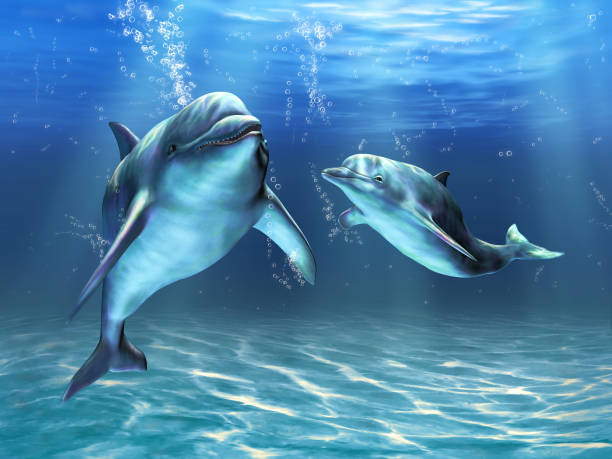
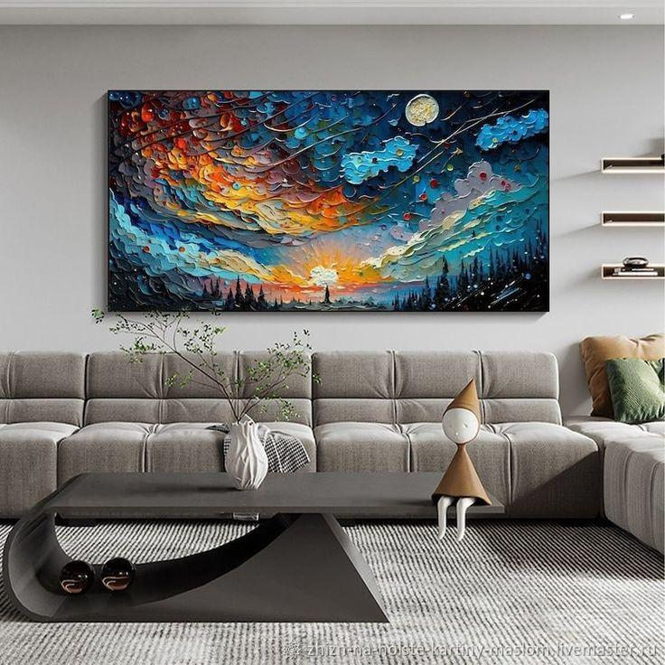
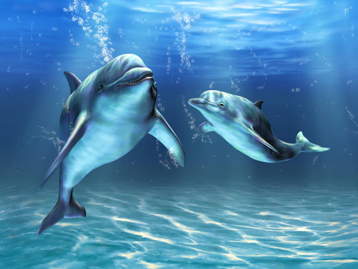
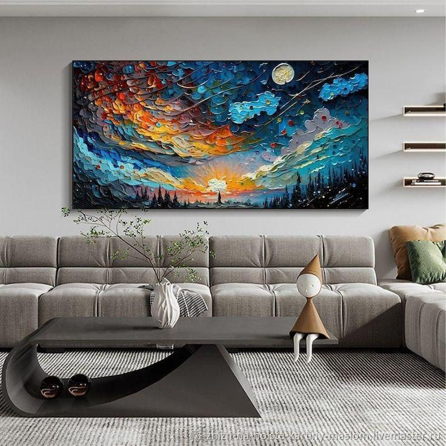
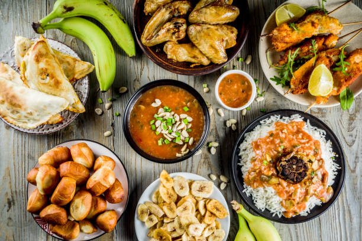
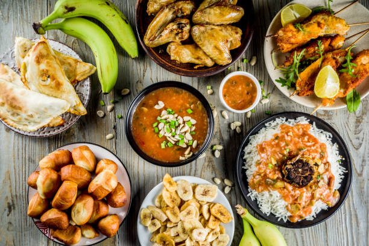

Selamat Datang di Pendidikan Matematika UNIMUS
Pendidikan Matematika UNIMUS Terakreditasi Unggul dan Berakhlak Karimah Serta Bereputasi Internas
MATERI STATISTIKA 1
Statistika adalah ilmu yang mempelajari cara mengumpulkan, menganalisis, menginterpretasikan, dan menyajikan data numerik. Ilmu ini berperan penting dalam penelitian, bisnis, hingga kehidupan sehari-hari untuk memahami dan mengambil kesimpulan dari data yang kompleks.
Galeri Gambar Menarik
Inspirasi visual dari seluruh dunia

 



 

Materi Pembelajaran dan Uji Pemahaman
Akses materi, lalu kerjakan kuis 5 soal di bawah setiap kartu untuk menguji pemahaman Anda.
1. Diagram Batang
Diagram batang (atau bar chart) adalah jenis diagram yang digunakan untuk menampilkan data dalam bentuk batang persegi panjang, di mana panjang setiap batang mewakili nilai dari suatu kategori.
Game Quiz: Uji Pengetahuanmu!
Uji pengetahuanmu tentang diagram batang dengan 5 soal pilihan ganda di bawah ini. Jawab semua pertanyaan, lalu klik "Kirim Jawaban" untuk lihat skor dan pembetulan.
Pertanyaan 1: Apa yang diwakili oleh panjang batang dalam diagram batang?
Pertanyaan 2: Dalam diagram batang, sumbu horizontal biasanya menunjukkan?
Pertanyaan 3: Diagram batang cocok digunakan untuk data apa?
Pertanyaan 4: Apa fungsi utama diagram batang?
Pertanyaan 5: Jika ada dua batang dengan panjang sama, apa artinya?
Skor Anda: 0/5